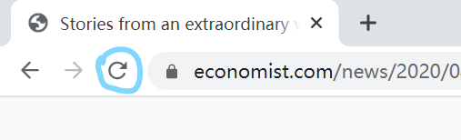

本篇博客讨论如何通过一些简便的手段绕过部分新闻传媒网站/文章创作网站的付费墙（Paywall）
What is paywall?
在阅读一些新闻媒体网站的时候，网站会将部分文章设置付费墙（如图），让非订阅用户只能看到第一段或前几段的正文，如果需要浏览全文，则需要订阅他们的会员或类似的服务。
Copyright conflicts
Warning!
本文作者绝不鼓励个人通过这些方式长期阅读 Paywall 内的内容，如有需要请自行付费支持！
为什么我要介绍绕过 Paywall 的方法？
我们不妨设想一个情景，你的朋友分享了一篇 Paywall 内的文章给你，但你因为没有订阅该媒体（网站）而无法查看，而你却并没有兴趣真正订阅那家媒体，好奇心把你折磨得死去活来，你也失去了与朋友对该篇文章进行思维碰撞的乐趣。
付费墙虽然能使作者和网站保证收入，但不利于知识的传播。以下介绍两种方法来实现绕过 paywall，测试网站为 The Economist，并不是所有网站都支持下列方法！
1. 中断刷新

浏览器工具栏有一个刷新按钮，网站成功载入前点击X号终止载入，因为部分网站的逻辑是会先显示全文，再判断你是否订阅，最后加载付费墙，但这个方法成功率较低，并且很多网站已经修改了加载逻辑来规避这种方法。
2. 使用 Telegram bot 来实现获得全文
InstantView Bot 是一个运行在 Telegram 上的一个可以将文章网页转换成 Telegraph 页面的一个机器人，博主在一次使用中发现它能获取到付费墙以内的文章内容，只需要将文章 URL 发送给它即可。
在搜索栏搜索 @CorsaBot 可以找到这个 bot。